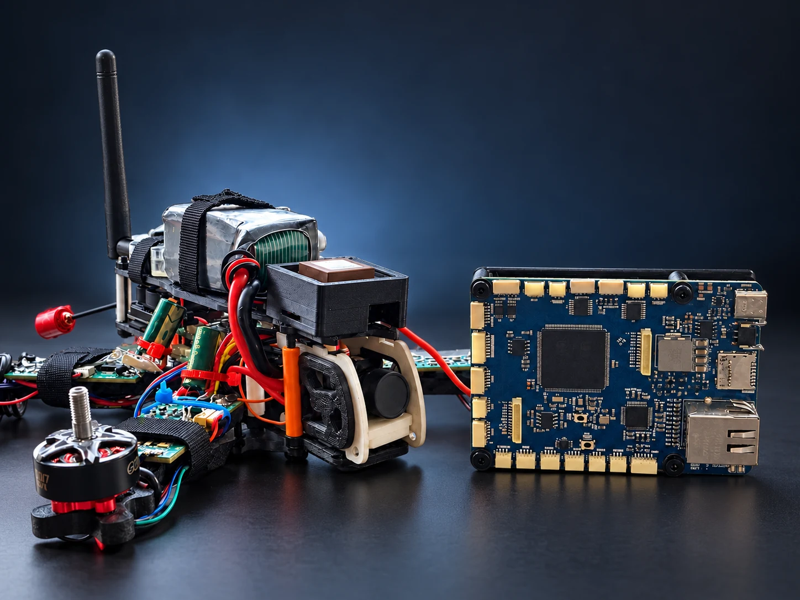
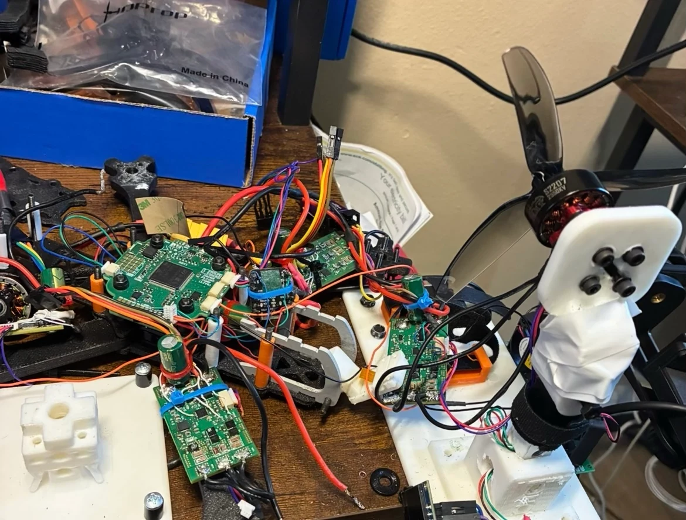

THOMAS STOLPE / ELECTRICAL ENGINEERING
From circuit design
to real hardware.
Custom electronics. Embedded systems. The test tools
that turn a design into something you can prove.
Explore the work ↓ON THE BENCHModular drone + HITL platform01 / 02
SCHEMATIC & PCB DESIGNEMBEDDED FIRMWARESYSTEM INTEGRATIONBENCH TESTING
SELECTED WORK / 01—02
Build the system.
Build the way to test it.
Two connected projects, from custom flight electronics to the bench that helps bring them up.

MODULAR DRONE / BENCH INTEGRATION↗
01 IN DEVELOPMENT
MODULAR DRONE PLATFORM
A drone, built from
the electronics up.
Custom flight sensing, battery monitoring and motor-drive electronics, developed together with a dedicated bench-test platform.
- STM32H743 flight control with inertial, pressure and magnetic sensing
- Battery telemetry, regulated power and three-phase motor drives
- Board bring-up, packaging and bench testing
Inside the drone project ↗ HITL / CONTROL + MEASUREMENT↗
HITL / CONTROL + MEASUREMENT↗
02 ON THE BENCH
HUMAN IN THE LOOP / HITL
The test bench
behind the hardware.
A computer-connected interface that selects signal sources, sends test commands and collects measurements from the drone electronics.
- Six-layer STM32H743 board with Ethernet
- Selectable DShot, UART and external magnetometer paths
- TCP commands, UDP telemetry and instrument comparisons
Explore the test platform ↗
THE APPROACH
Design it. Build it.
Put it on the bench.
My work connects board design, embedded firmware and physical testing. The result is a portfolio of hardware you can inspect, with a clear view of what’s built and what’s next.